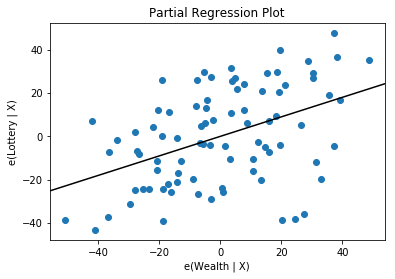

import statsmodels.api as sm
import pandas as pd
from patsy import dmatrices
df = sm.datasets.get_rdataset("Guerry", "HistData").data
|
dept |
Region |
Department |
Crime_pers |
Crime_prop |
Literacy |
Donations |
Infants |
Suicides |
MainCity |
... |
Crime_parents |
Infanticide |
Donation_clergy |
Lottery |
Desertion |
Instruction |
Prostitutes |
Distance |
Area |
Pop1831 |
| 0 |
1 |
E |
Ain |
28870 |
15890 |
37 |
5098 |
33120 |
35039 |
2:Med |
... |
71 |
60 |
69 |
41 |
55 |
46 |
13 |
218.372 |
5762 |
346.03 |
| 1 |
2 |
N |
Aisne |
26226 |
5521 |
51 |
8901 |
14572 |
12831 |
2:Med |
... |
4 |
82 |
36 |
38 |
82 |
24 |
327 |
65.945 |
7369 |
513.00 |
| 2 |
3 |
C |
Allier |
26747 |
7925 |
13 |
10973 |
17044 |
114121 |
2:Med |
... |
46 |
42 |
76 |
66 |
16 |
85 |
34 |
161.927 |
7340 |
298.26 |
| 3 |
4 |
E |
Basses-Alpes |
12935 |
7289 |
46 |
2733 |
23018 |
14238 |
1:Sm |
... |
70 |
12 |
37 |
80 |
32 |
29 |
2 |
351.399 |
6925 |
155.90 |
| 4 |
5 |
E |
Hautes-Alpes |
17488 |
8174 |
69 |
6962 |
23076 |
16171 |
1:Sm |
... |
22 |
23 |
64 |
79 |
35 |
7 |
1 |
320.280 |
5549 |
129.10 |
5 rows × 23 columns
|
dept |
Region |
Department |
Crime_pers |
Crime_prop |
Literacy |
Donations |
Infants |
Suicides |
MainCity |
... |
Crime_parents |
Infanticide |
Donation_clergy |
Lottery |
Desertion |
Instruction |
Prostitutes |
Distance |
Area |
Pop1831 |
| 81 |
86 |
W |
Vienne |
15010 |
4710 |
25 |
8922 |
35224 |
21851 |
2:Med |
... |
20 |
1 |
44 |
40 |
38 |
65 |
18 |
170.523 |
6990 |
282.73 |
| 82 |
87 |
C |
Haute-Vienne |
16256 |
6402 |
13 |
13817 |
19940 |
33497 |
2:Med |
... |
68 |
6 |
78 |
55 |
11 |
84 |
7 |
198.874 |
5520 |
285.13 |
| 83 |
88 |
E |
Vosges |
18835 |
9044 |
62 |
4040 |
14978 |
33029 |
2:Med |
... |
58 |
34 |
5 |
14 |
85 |
11 |
43 |
174.477 |
5874 |
397.99 |
| 84 |
89 |
C |
Yonne |
18006 |
6516 |
47 |
4276 |
16616 |
12789 |
2:Med |
... |
32 |
22 |
35 |
51 |
66 |
27 |
272 |
81.797 |
7427 |
352.49 |
| 85 |
200 |
NaN |
Corse |
2199 |
4589 |
49 |
37015 |
24743 |
37016 |
2:Med |
... |
81 |
2 |
84 |
83 |
9 |
25 |
1 |
539.213 |
8680 |
195.41 |
5 rows × 23 columns
selective = ['Department', 'Lottery', 'Literacy', 'Wealth', 'Region']
['Department', 'Lottery', 'Literacy', 'Wealth', 'Region']
|
Department |
Lottery |
Literacy |
Wealth |
Region |
| 0 |
Ain |
41 |
37 |
73 |
E |
| 1 |
Aisne |
38 |
51 |
22 |
N |
| 2 |
Allier |
66 |
13 |
61 |
C |
| 3 |
Basses-Alpes |
80 |
46 |
76 |
E |
| 4 |
Hautes-Alpes |
79 |
69 |
83 |
E |
|
Department |
Lottery |
Literacy |
Wealth |
Region |
| 81 |
Vienne |
40 |
25 |
68 |
W |
| 82 |
Haute-Vienne |
55 |
13 |
67 |
C |
| 83 |
Vosges |
14 |
62 |
82 |
E |
| 84 |
Yonne |
51 |
47 |
30 |
C |
| 85 |
Corse |
83 |
49 |
37 |
NaN |
# drop na
df = df.dropna()
|
Department |
Lottery |
Literacy |
Wealth |
Region |
| 80 |
Vendee |
68 |
28 |
56 |
W |
| 81 |
Vienne |
40 |
25 |
68 |
W |
| 82 |
Haute-Vienne |
55 |
13 |
67 |
C |
| 83 |
Vosges |
14 |
62 |
82 |
E |
| 84 |
Yonne |
51 |
47 |
30 |
C |
y, X = dmatrices('Lottery ~ Literacy + Wealth + Region', data=df, return_type='dataframe')
|
Lottery |
| 80 |
68.0 |
| 81 |
40.0 |
| 82 |
55.0 |
| 83 |
14.0 |
| 84 |
51.0 |
|
Lottery |
| 0 |
41.0 |
| 1 |
38.0 |
| 2 |
66.0 |
| 3 |
80.0 |
| 4 |
79.0 |
|
Lottery |
| 0 |
41.0 |
| 1 |
38.0 |
| 2 |
66.0 |
|
Intercept |
Region[T.E] |
Region[T.N] |
Region[T.S] |
Region[T.W] |
Literacy |
Wealth |
| 0 |
1.0 |
1.0 |
0.0 |
0.0 |
0.0 |
37.0 |
73.0 |
| 1 |
1.0 |
0.0 |
1.0 |
0.0 |
0.0 |
51.0 |
22.0 |
| 2 |
1.0 |
0.0 |
0.0 |
0.0 |
0.0 |
13.0 |
61.0 |
| 3 |
1.0 |
1.0 |
0.0 |
0.0 |
0.0 |
46.0 |
76.0 |
# Model fit and Summary
model = sm.OLS(y, X)
OLS Regression Results
==============================================================================
Dep. Variable: Lottery R-squared: 0.338
Model: OLS Adj. R-squared: 0.287
Method: Least Squares F-statistic: 6.636
Date: Thu, 25 Apr 2019 Prob (F-statistic): 1.07e-05
Time: 20:54:07 Log-Likelihood: -375.30
No. Observations: 85 AIC: 764.6
Df Residuals: 78 BIC: 781.7
Df Model: 6
Covariance Type: nonrobust
===============================================================================
coef std err t P>|t| [0.025 0.975]
-------------------------------------------------------------------------------
Intercept 38.6517 9.456 4.087 0.000 19.826 57.478
Region[T.E] -15.4278 9.727 -1.586 0.117 -34.793 3.938
Region[T.N] -10.0170 9.260 -1.082 0.283 -28.453 8.419
Region[T.S] -4.5483 7.279 -0.625 0.534 -19.039 9.943
Region[T.W] -10.0913 7.196 -1.402 0.165 -24.418 4.235
Literacy -0.1858 0.210 -0.886 0.378 -0.603 0.232
Wealth 0.4515 0.103 4.390 0.000 0.247 0.656
==============================================================================
Omnibus: 3.049 Durbin-Watson: 1.785
Prob(Omnibus): 0.218 Jarque-Bera (JB): 2.694
Skew: -0.340 Prob(JB): 0.260
Kurtosis: 2.454 Cond. No. 371.
==============================================================================
Warnings:
[1] Standard Errors assume that the covariance matrix of the errors is correctly specified.
# Check res params
res.params
Intercept 38.651655
Region[T.E] -15.427785
Region[T.N] -10.016961
Region[T.S] -4.548257
Region[T.W] -10.091276
Literacy -0.185819
Wealth 0.451475
dtype: float64
# Check rsquared
res.rsquared
0.337950869192882
# Rainbow test
sm.stats.linear_rainbow(res)
(0.8472339976156916, 0.6997965543621643)
# Plot
sm.graphics.plot_partregress('Lottery', 'Wealth', ['Region' ,'Literacy'], data=df, obs_labels = False)
